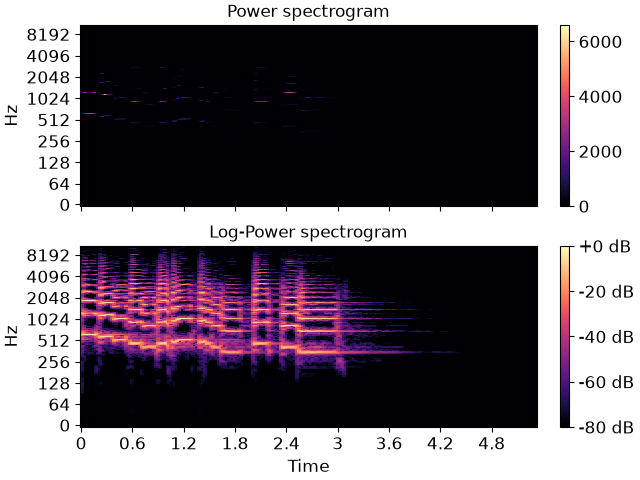

librosa.power_to_db
- librosa.power_to_db(S, *, ref=1.0, amin=1e-10, top_db=80.0)[source]
Convert a power spectrogram (amplitude squared) to decibel (dB) units
This computes the scaling
10 * log10(S / ref)in a numerically stable way.- Parameters:
- Snp.ndarray
input power
- refscalar or callable
If scalar, the amplitude
abs(S)is scaled relative toref:10 * log10(S / ref)
Zeros in the output correspond to positions where
S == ref.If callable, the reference value is computed as
ref(S).- aminfloat > 0 [scalar]
minimum threshold for
abs(S)andref- top_dbfloat >= 0 [scalar]
threshold the output at
top_dbbelow the peak:max(10 * log10(S/ref)) - top_db
- Returns:
- S_dbnp.ndarray
S_db ~= 10 * log10(S) - 10 * log10(ref)
Notes
This function caches at level 30.
Examples
Get a power spectrogram from a waveform
y>>> y, sr = librosa.load(librosa.ex('trumpet')) >>> S = np.abs(librosa.stft(y)) >>> librosa.power_to_db(S**2) array([[-41.809, -41.809, ..., -41.809, -41.809], [-41.809, -41.809, ..., -41.809, -41.809], ..., [-41.809, -41.809, ..., -41.809, -41.809], [-41.809, -41.809, ..., -41.809, -41.809]], dtype=float32)
Compute dB relative to peak power
>>> librosa.power_to_db(S**2, ref=np.max) array([[-80., -80., ..., -80., -80.], [-80., -80., ..., -80., -80.], ..., [-80., -80., ..., -80., -80.], [-80., -80., ..., -80., -80.]], dtype=float32)
Or compare to median power
>>> librosa.power_to_db(S**2, ref=np.median) array([[16.578, 16.578, ..., 16.578, 16.578], [16.578, 16.578, ..., 16.578, 16.578], ..., [16.578, 16.578, ..., 16.578, 16.578], [16.578, 16.578, ..., 16.578, 16.578]], dtype=float32)
And plot the results
>>> import matplotlib.pyplot as plt >>> fig, ax = plt.subplots(nrows=2, sharex=True, sharey=True) >>> imgpow = librosa.display.specshow(S**2, sr=sr, y_axis='log', x_axis='time', ... ax=ax[0]) >>> ax[0].set(title='Power spectrogram') >>> ax[0].label_outer() >>> imgdb = librosa.display.specshow(librosa.power_to_db(S**2, ref=np.max), ... sr=sr, y_axis='log', x_axis='time', ax=ax[1]) >>> ax[1].set(title='Log-Power spectrogram') >>> fig.colorbar(imgpow, ax=ax[0]) >>> fig.colorbar(imgdb, ax=ax[1], format="%+2.0f dB")
